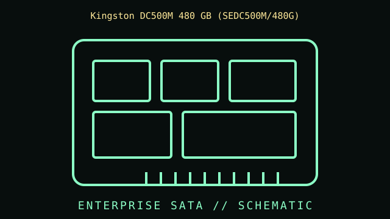

[ INDIVIDUAL COMPONENT // SATA SOLID-STATE DRIVE ]
Kingston DC500M 480 GB (SEDC500M/480G)
Model-specific archival record for the Kingston DC500M 480 GB SKU. Capacity, interface and product family are identified separately so that data from another capacity or revision is not silently substituted.

IDENTIFICATION: Match the complete label SEDC500M/480G, capacity, firmware and revision to the Kingston documentation before service. Same-family capacities are separate records and their ratings are not interchangeable.
Specifications
| Manufacturer / model | Kingston DC500M 480 GB |
|---|---|
| Full manufacturer SKU | SEDC500M/480G |
| Capacity | 480 GB |
| Workload class | Mixed-use enterprise SATA SSD |
| Form factor | 2.5-inch, 7 mm class; confirm the enclosure clearance and label for this exact part. |
| Interface / protocol | SATA 6 Gb/s (SATA Revision 3.x); this is a SATA device, not an NVMe drive. SATA link signaling rate is not the drive's guaranteed sustained payload throughput. |
| NAND, performance and endurance | Use the linked Kingston datasheet's capacity-specific table for the exact sequential/random performance, NAND description, workload rating and endurance figures. They are deliberately not inferred from a neighboring capacity or another DC-series family. |
Interface & compatibility
- Requires a compatible SATA data and power connection and a 2.5-inch bay with suitable height clearance; an M.2 or mSATA socket is not mechanically interchangeable.
- Confirm that the host controller, backplane, BIOS/UEFI, operating system and cabling support the SATA generation and enterprise drive's intended configuration.
- TRIM, SMART, firmware maintenance, sanitize and power-loss features depend on the specific drive firmware, host controller, OS/driver and any USB or RAID bridge in the path.
- Do not cross-flash firmware or assume that another DC500/DC600/DC400 capacity has identical endurance, encryption, firmware or service behavior.
Archival & service notes
This record identifies the product as a specific capacity and part number within its workload class. Record its label, serial, firmware, SMART/health snapshot, host/backplane, acquisition history and the revision of the datasheet used to interpret it.
- Enterprise class and a published endurance rating do not guarantee a particular remaining life or powered-off retention interval.
- Keep verified backups and perform periodic integrity checks; an SSD is not a substitute for independent archival copies.
- For any measured performance, document the host, firmware, workload, queue depth, fill level and test method rather than treating a peak specification as a typical result.
Sources & further reading
- Kingston DC500M Data Center SSD datasheetKingston's model-family datasheet. Use the capacity-specific row and revision that match SEDC500M/480G.
- SATA-IO — Purchase SATA SpecificationInterface-standard reference for checking SATA host and link compatibility; it does not replace Kingston's part-specific specifications.